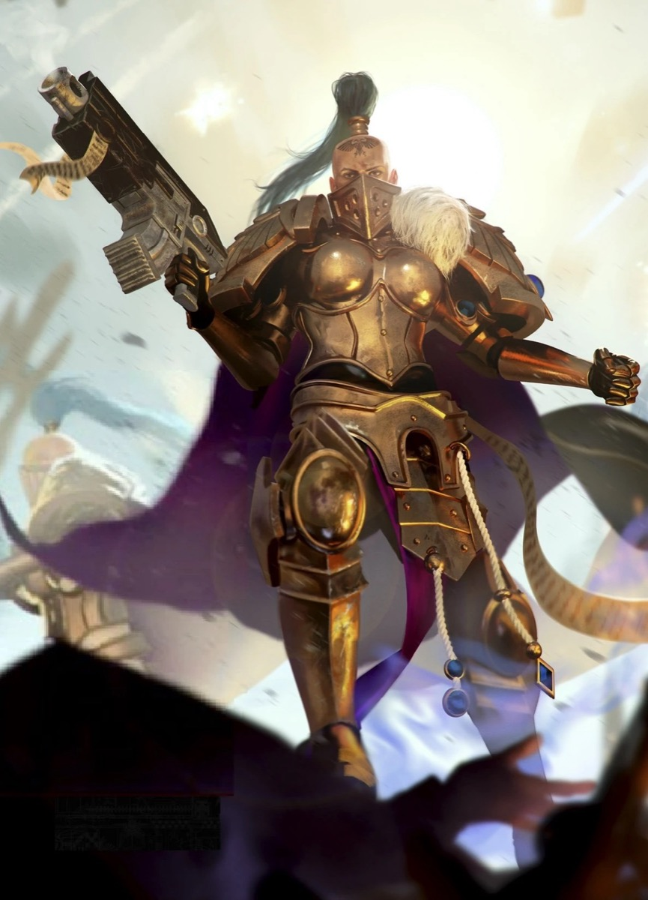

Black Ships
| Black Ships League of Black Ships | |
|---|---|
 Naval schematic of a Black Ship of the League, with the battlecruiser hull and prison holds typical of the type Artwork © Games Workshop | |
| Type | Psyker transport and prison fleet |
| Owner | Adeptus Astra Telepathica |
| Oversight | Inquisition; Sisters of Silence |
| Origin | Great Crusade, late M30 |
| Builders | Adeptus Mechanicus, chiefly at Mars |
| Strength | Many thousands of ships; the second-largest human fleet |
| Destination | Terra |
| Purpose | The psyker tithe: training, soul-binding or sacrifice to the Golden Throne |
The Black Ships are the fleet of the League of Black Ships, the recruiting arm of the Adeptus Astra Telepathica. They travel from world to world across the Imperium of Mankind, collecting every psyker that the worlds of the Imperium are required to surrender, and carry them to Terra. There the psykers are tested. Those strong enough are trained to serve the Imperium as astropaths, sanctioned psykers and Librarians. The rest are given to the Golden Throne, where their lives sustain the Emperor of Mankind and the light of the Astronomican.[1][2]
The fleet is independent of the Imperial Navy and is said to be the second-largest human fleet in the galaxy; only the highest adepts of the Telepathica know its true size. Its ships are among the most feared in the Imperium. They are prisons as much as transports, their holds shielded against the psychic power of their cargo, and their arrival in a system is remembered on most worlds as a time of grief.[2]
The Black Ships date from the Great Crusade (c. 798.M30), when they were crewed by the Sisters of Silence. In later millennia the Inquisition took a leading role in their operation. In the Era Indomitus, the restored Sisters of Silence have returned to the fleet, and many Black Ships now follow the battlefleets of the Indomitus Crusade as the Flights of Crows.[3]
History
[edit]Great Crusade
[edit]The Emperor of Mankind mistrusted psykers. In the Age of Strife the human psychic gift had spread, and with it possession, madness and the rule of witch-kings; the Emperor had slain many of them himself in the Unification Wars. He also knew that the Imperium could not exist without psykers, because only astropaths could carry messages between the stars. The Astra Telepathica, founded in the final years of the Unification Wars, was given the task of finding them.[2]
The first Black Ships followed the expedition fleets of the Great Crusade into newly compliant space. They were crewed and commanded by the Sisters of Silence, the order of untouchable women whose null nature made them immune to psychic attack, and who were known as the Witchseekers. Every psyker they found was either brought to Terra for testing or, if judged too dangerous, killed. The Sisters operated from the Somnus Citadel on Luna, and they and their ships were regarded with awe by the rest of the Imperium.[2][4]
The Astra Telepathica's headquarters in the Imperial Palace, the City of Sight, received the psykers that the Black Ships brought. The Council of Nikaea of 001.M31, which forbade the Legion Librarians to use their powers, made no change to the work of the Black Ships, and in the years that followed their holds grew fuller than ever.[4]
Horus Heresy
[edit]During the Horus Heresy the Black Ships were drawn into the war. The Sisters of Silence fought alongside the Legio Custodes in the Webway War beneath the Palace, and hunted psykers and traitors across the Imperium. When the Emperor's Webway project was ruined and he took his place on the Golden Throne to hold the breach closed, the Throne began to consume the lives of psykers, and from that time the cargo of the Black Ships has fed it. Records of the Siege of Terra describe hundreds of psykers given to the Throne each day to keep the Emperor alive.[4][5]
Under the Inquisition
[edit]After the Heresy the Sisters of Silence dwindled, and the order was long believed to have been folded into the Inquisition or to have died out. It survived in small numbers, and a bastion of the Silent Sisterhood played a part in the victory over the Orks in the War of the Beast in the 32nd millennium.[5] But for most of the following ten thousand years the Black Ships were run by the adepts of the Telepathica under the supervision of the Inquisition, which gained the right to travel aboard any ship of the fleet. Many accounts of the 41st millennium describe them as the Inquisition's own ships.[a]
Era Indomitus
[edit]The opening of the Great Rift made the old circuits of the fleet almost impossible to follow. Many ships were lost on the far side of the Rift, and those that survived had to pass through war zones and Warp storms to reach their worlds. At the same time the need for psykers was greater than ever, because the Astronomican had dimmed and the Golden Throne was failing.[3]
The Lord Commander, Roboute Guilliman, restored the Sisters of Silence to a public place among the Imperium's defenders, and they once more serve aboard the Black Ships. The order's leaders proposed a new method of collection. While some ships continued their circuits as before, many more were attached to the battle groups of the Indomitus Crusade. Like carrion birds following an army, these Flights of Crows descend on newly reconquered systems and take their tithe from populations so cowed by war that they offer no resistance. By this means the supply of psykers to the Throne has been kept up, at least in the Imperium Sanctus.[3]
Ships
[edit]
The Black Ships are built almost exclusively in the orbital yards of Mars, though records show a few completed at the Segmentum Fortresses of Kar Duniash and Cypra Mundi. Most are extremely old, and losses are replaced slowly. A typical Black Ship combines the hull of a battlecruiser with the troop decks of a strike cruiser. Its weapons are comparable to those of a front-line warship, because its cargo would be a prize of the first order to the servants of Chaos or to the Drukhari, and it rarely travels without escort.[2][1]
A Black Ship's most important system is its Gellar field, which is strengthened and tuned to hide the psychic beacon of thousands of psykers held together in the Warp. The ship also carries a company of untouchables, whose null presence dampens psychic power, and a mission of the Adepta Sororitas to keep order and to defend the ship against boarders.[2]
The holds
[edit]The holds of a Black Ship are designed to keep its cargo helpless. Psykers are kept in dim, shielded chambers flooded with discordant noise and broken by bursts of strobing light. Their food is drugged, and they are moved regularly from hold to hold. A team of trained adepts focuses its power into a device called an occluding sphere, which disrupts the thoughts of any psyker nearby. The most dangerous captives are kept in isolation cells at the bottom of the ship. Even so, the despair that the psykers project unwittingly fills the ship, and only crew of unusual strength of mind can endure service aboard one.[2]
Crews
[edit]The captains and senior officers of the Black Ships are adepts of the Astra Telepathica. The crews are drawn by ancient contract from worlds near Terra, which supply men and women for the fleet in return for exemption from other tithes. Every crewman is tested for psychic sensitivity and regularly mind-scrubbed. The fleet's Navigators come exclusively from three Navigator Houses, Granicus, Ptolemy and MacPherson, which serve the Telepathica alone.[2]
The tithe
[edit]Every world of the Imperium is visited by a Black Ship about once a century. Before it arrives, the planetary governor is ordered to gather every psyker that his officials have found, and the Black Ship's captain inspects the levy before continuing his circuit. Worlds that hide their psykers, or fail to provide the expected number, are punished, and Inquisitors aboard the ship watch for signs of corruption among the population.[2][6]
Every day, dozens of Black Ships reach Terra and transfer tens of thousands of psykers to the processing halls of the Scholastica Psykana. There they are graded. The strongest in mind and power are trained for service in the Adeptus Astartes, the Astra Militarum, the Inquisition or the Adeptus Astronomica. Most of the rest become astropaths, bound to the Emperor in the ritual of soul-binding. Those too weak, too old or too dangerous to train are given to the Golden Throne.[2]
Inquisitors have long used the Black Ships to find promising psykers for their own service, and many acolytes began their careers as prisoners in a Black Ship's hold.[6]
Timeline
[edit]| Date | Event |
|---|---|
| c. 797.M30[b] | The Emperor of Mankind founds the Adeptus Astra Telepathica in the final years of the Unification Wars, to find the psykers the Imperium needs. |
| c. 798.M30[c] | The first Black Ships follow the expedition fleets of the Great Crusade, crewed by the Sisters of Silence. |
| 001.M31 | The Council of Nikaea lays down new strictures on psykers. The holds of the Black Ships grow fuller than before. |
| 005–014.M31 | During the Horus Heresy, the Sisters of Silence fight beside the Legio Custodes in the Webway War. |
| 014.M31 | The Emperor takes his place on the Golden Throne. The Throne begins to consume the lives of psykers, and the cargo of the Black Ships feeds it from then on. |
| 544–546.M32 | A bastion of the Silent Sisterhood plays a part in the victory over the Orks of the War of the Beast. |
| M36 | After the Age of Apostasy, the Black Ships are run by the adepts of the Telepathica under the supervision of the Inquisition. |
| M39 | The Regulae of the League of Black Ships are revised. |
| c. 300.M41 | Inquisitors draw promising psykers from the holds of the Black Ships for their own service, as recorded in the memoirs of Gregor Eisenhorn. |
| 999.M41 | The opening of the Great Rift makes the old circuits of the fleet almost impossible to follow, and many ships are lost on the far side of the Rift. |
| c. 001.M42[d] | During the Noctis Aeterna, the fleet's need for psykers grows as the Astronomican dims and the Golden Throne fails. |
| c. 012.M42[e] | Roboute Guilliman restores the Sisters of Silence to the Imperium's defence, and the Black Ships join the battlefleets of the Indomitus Crusade as the Flights of Crows. |
See also
[edit]Notes
[edit]- ^ Several older Imperial records describe the Black Ships as vessels of the Inquisition, built at the order of its Grand Masters and crewed by Inquisitorial storm troopers. The Telepathica's own charters assign ownership of the fleet to the Adeptus Astra Telepathica, and the Inquisition's role to oversight and passage. Both arrangements appear to have existed at different times and in different regions.
- ^ Estimated; no record gives an exact year.
- ^ Estimated; no record gives an exact year.
- ^ Estimated; no record gives an exact year.
- ^ Estimated; no record gives an exact year.
References
[edit]- ^ a b Swallow, James. The Flight of the Eisenstein (novel). Black Library.
- ^ a b c d e f g h i j Warhammer 40,000: Rulebook (Digital Edition) (7th Edition), pp. 279, 300, 320, 328, 386, 532, 543-544. Games Workshop.
- ^ a b c Battlefleet Gothic Magazine 9, "Inquisition Black Ship," by Bob Henderson, pp. 16-17.
- ^ a b c Codex Imperialis (1st Edition), pg. 36. Games Workshop.
- ^ a b Tales of Heresy (Anthology), "The Voice" by James Swallow.
- ^ a b Annandale, David. Abyssal (Short Story). Black Library.